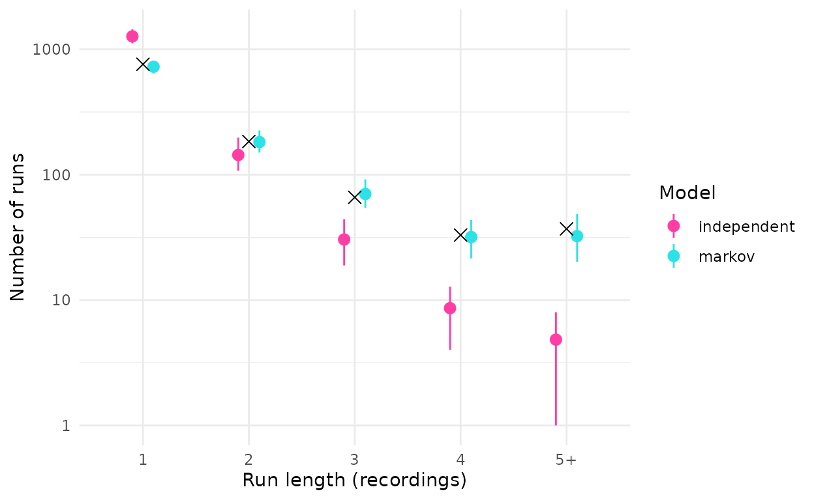

The occupancy model treats the occasions of a site as independent given whether the site is occupied. With short occasions this is often false. A Common Pauraque that starts calling at dusk is recorded in several consecutive recordings, then falls silent for a while: detections come in runs. Independent occasions spread the detections of an occupied site more evenly than that, so the model underestimates how often an occupied site yields no detection at all on a given night, and overstates how much information each detection carries.
fp_occu(markov = ) adds a first-order Markov term for
true detections. This article fits it to the curiango data
(Piatti et al., 2026) and compares it with the model of independent
occasions.
The model
With markov = "time", the probability that occasion
k of an occupied site i is a detection depends on whether occasion
k - 1 was:
\mathrm{logit}(p_{11,ik}) = \mathbf{z}_{ik}^\top \boldsymbol{\alpha} + \theta\, y_{i,k-1},
where \mathbf{z}_{ik} are the
detection covariates with coefficients \boldsymbol{\alpha}, y_{i,k-1} is the observed automated detection
on the previous occasion, and \theta
(reported as det_y_prev) is the change in the logit of
detection right after a detection. A positive \theta means runs. The prior on \theta is the slope prior of
fp_priors(), Normal(0, 2.5) by default.
Three details matter.
- The term acts on the occupied state only. False positives stay independent among occasions, since a classifier’s errors are not expected to come in runs in the same way.
- The previous occasion must be one time step earlier, where the step is the shortest interval between consecutive occasions of a site. The first occasion of each site, and an occasion that follows a gap, has y_{i,k-1} = 0; a run is never carried across a missing recording.
- The previous detection is taken from the data, so posterior
predictive checks (
fp_ppc()) replicate each occasion given the observed previous one, whilesimulate()generates whole runs in order.
Fitting
zs <- function(v) as.numeric(scale(v))
m <- curiango$minutes
auto <- data.frame(site_night = m$site_night, time = m$time,
y = as.integer(m$conf_custom >= 0.40),
bio = zs(m$bio), aci = zs(m$aci), recorder = m$site)
nt <- curiango$nights
sites <- data.frame(site_night = nt$site_night, temp = zs(nt$temp),
rh = zs(nt$rh), moon = zs(log(nt$moon)))
ver <- data.frame(site_night = curiango$verified$site_night,
y = curiango$verified$y)
d <- fp_data(auto, sites, ver, site = "site_night", recorder = "recorder")
m0 <- fp_occu(d, occ = ~ temp + rh + moon, det = ~ bio + aci, fp = ~ 1,
threads_per_chain = 4)
m1 <- fp_occu(d, occ = ~ temp + rh + moon, det = ~ bio + aci, fp = ~ 1,
markov = "time", threads_per_chain = 4)The recordings were made every 15 minutes, so the time step is 15 minutes. Of the 97,806 occasions, 1,747 follow a longer interval within the same night and start a new run. Each fit took about 6 minutes with four chains of four threads.
Results
Both fits converged: the largest R-hat was 1.005 and 1.003, the smallest bulk effective sample size 798 and 879, with 0 and 0 divergent transitions.
The run effect is large: \theta = 2.14 (2.00 to 2.28) on the logit scale. Right after a detection, the odds of another detection in the next recording are about 8.5 times as high as after a recording without one.
vars <- c("occ_temp", "occ_rh", "occ_moon", "det_(Intercept)", "det_y_prev",
"p10_ref")
est <- purrr::imap(res$summary, function(t, nm) {
t <- t[t$variable %in% vars, c("variable", "mean", "lower", "upper")]
data.frame(model = nm, t)
}) |> purrr::list_rbind()
est[c("mean", "lower", "upper")] <- signif(est[c("mean", "lower", "upper")], 3)
est
#> model variable mean lower upper
#> 1 independent occ_temp -0.25000 -0.38600 -0.10800
#> 2 independent occ_rh -0.77300 -0.93400 -0.62400
#> 3 independent occ_moon 0.13700 -0.02330 0.30600
#> 4 independent det_(Intercept) -2.80000 -3.62000 -1.84000
#> 5 independent p10_ref 0.00327 0.00284 0.00375
#> 6 markov occ_temp -0.25100 -0.39700 -0.10900
#> 7 markov occ_rh -0.81400 -0.97600 -0.65800
#> 8 markov occ_moon 0.11900 -0.04020 0.28500
#> 9 markov det_(Intercept) -3.26000 -3.88000 -2.54000
#> 10 markov det_y_prev 2.14000 2.00000 2.28000
#> 11 markov p10_ref 0.00249 0.00210 0.00290The occupancy effects barely move: temperature -0.25 (-0.39 to -0.11) without the term and -0.25 (-0.40 to -0.11) with it, relative humidity -0.77 (-0.93 to -0.62) and -0.81 (-0.98 to -0.66). The false-positive rate at the reference values falls from 0.33% to 0.25%: without the term, part of the clustering of detections is attributed to false positives.
Does the model reproduce the runs?
Data simulated from each fit (50 datasets, parameters drawn from the posterior) can be compared with the observed lengths of runs of consecutive detections:
lev <- names(res$runs_observed)
sims <- purrr::imap(res$runs_simulated, function(mat, nm) {
data.frame(model = nm, length = factor(lev, levels = lev),
mean = colMeans(mat),
lower = purrr::map_dbl(seq_along(lev), function(j) stats::quantile(mat[, j], 0.025)),
upper = purrr::map_dbl(seq_along(lev), function(j) stats::quantile(mat[, j], 0.975)))
}) |> purrr::list_rbind()
obs <- data.frame(length = factor(lev, levels = lev),
count = as.numeric(res$runs_observed))
ggplot2::ggplot(sims, ggplot2::aes(length, mean, colour = model)) +
ggplot2::geom_pointrange(ggplot2::aes(ymin = lower, ymax = upper),
position = ggplot2::position_dodge(width = 0.4)) +
ggplot2::geom_point(data = obs, ggplot2::aes(length, count), colour = "black",
shape = 4, size = 3, inherit.aes = FALSE) +
ggplot2::scale_y_log10() +
ggplot2::scale_colour_manual(values = c(independent = "#FF3EA5", markov = "#2DE2E6")) +
ggplot2::labs(x = "Run length (recordings)", y = "Number of runs", colour = "Model") +
ggplot2::theme_minimal()
Number of runs of consecutive detections of each length in the observed data (black) and in 50 datasets simulated from each fit (mean and 95% range).
#> 1 2 3 4 5+
#> observed 760 184 66 33 37
#> independent 1269 144 30 9 5
#> markov 726 182 70 32 32Independent occasions produce too many isolated detections and far too few long runs: 5 runs of five or more recordings on average, against 37 observed. With the Markov term the simulated counts are close to the observed ones at every length.
Posterior predictive check and LOO
The Freeman-Tukey discrepancy of fp_ppc() sums, over
sites, how far the detections of each site are from what the model
expects:
data.frame(model = names(res$ppc),
p_value = purrr::map_dbl(res$ppc, "p_value"),
observed = round(purrr::map_dbl(res$ppc, function(p) mean(p$fit_obs))),
replicated = round(purrr::map_dbl(res$ppc, function(p) mean(p$fit_rep))))
#> model p_value observed replicated
#> independent independent 0 567 400
#> markov markov 0 428 349The Markov term brings the observed discrepancy closer to the
replicated one, but both p-values are 0: the detections of some
site-nights remain further from their expected values than the model
allows. The discrepancy is computed per site-night, so it does not
measure runs directly, and the remaining misfit may come from variation
among nights that the covariates do not explain.
vignette("site_effects") adds a site effect on true
detection to these fits; leave-one-site-out comparison prefers the model
with both terms.
Leave-one-site-out cross-validation prefers the Markov model, by 450 units of expected log predictive density, 8 times its standard error:
res$loo[, c("model", "elpd_diff", "se_diff")]
#> model elpd_diff se_diff
#> 1 markov 0.0000 0.00000
#> 2 independent -449.5631 54.47967When to use it
- With occasions of a few minutes and a species that calls in bouts, try the Markov term and compare with LOO and a posterior predictive check.
- With one occasion per night or per visit, runs are rare and the term adds little.
- The term needs the time of each occasion. Record it, and check how many occasions follow gaps, since each gap restarts a run.